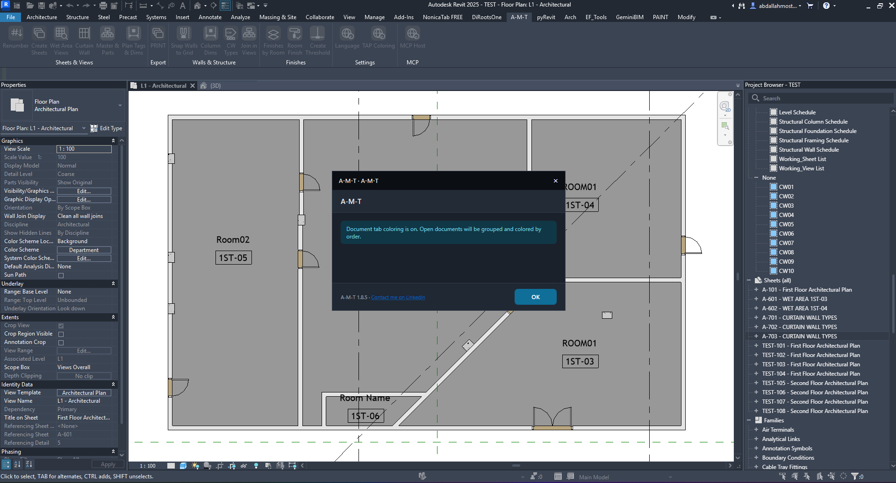

TAP Coloring
Keep open Revit documents visually organized. TAP Coloring groups open document tabs and applies colors according to their order.
How the command works
Enable the feature from the A-M-T ribbon and use the confirmation message to verify its status.
1. Activate TAP Coloring
Find the command in the A-M-T ribbon under the Settings group.
Where to find the command
Open the A-M-T ribbon tab and locate TAP Coloring in the Settings group. Click it to turn on document tab coloring.

2. Understand the confirmation message
The dialog confirms that the feature is enabled and explains what happens to open documents.
“Document tab coloring is on”
Confirms that TAP Coloring has been activated.
“Open documents will be grouped and colored by order”
Explains the behavior applied to open document tabs: they are grouped and colored according to their order.
OK
Closes the confirmation dialog after you have read the message.
Where it applies
The message refers to open documents and their document tabs. It does not indicate that model elements or view graphics are being recolored.
3. Continue working with organized document tabs
After dismissing the message, continue working in Revit with the tab-coloring feature enabled.
- Check that the confirmation says document tab coloring is on.
- Click OK to close the message.
- Use your open Revit documents; their tabs are grouped and colored by order.
Quick checklist
Use this short check when enabling TAP Coloring.
- Open the A-M-T ribbon tab.
- Click TAP Coloring in the Settings group.
- Confirm the message says document tab coloring is on.
- Click OK and continue working with the open document tabs.